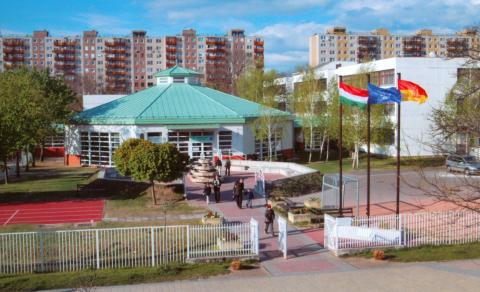

Általános és Középiskola /Érettségi/

Újpesti Károlyi István Általános Iskola és Gimnázium (KIG)
[2006-2018]
Középiskolámból egy szép érettségi bizonyítvánnyal ballagtam el:
-
Emelt szintű Matematikából 5-ös
-
Informatikából 5-ös
-
Történelemből 5-ös
-
Magyar Nyelvből 4-es
-
Magyar Irodalomból 4-es érdemjeggyel
Tekintettel az informatikából szerzett eredményeimre, esélyem volt egy ECDL-bizonyítvány megszerzésére is.